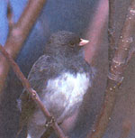
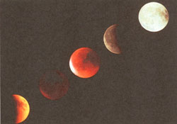
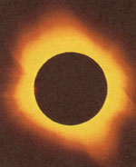
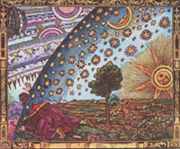

Seasons Of Earth And Sky
February/March 1998
The Eclipsed Season
Both the Sun and the Moon vanish from the sky this February
By Fred Schaaf
If you're getting just plain sick of winter, perhaps some fine February and March birds and eclipses can help brighten things up a bit. By making the heavens, birds, and nature in general an important part of your life, you'll be following in the footsteps of a number of the men whose lives we are supposed to collectively celebrate each February on Presidents' Day.
Snowbirds
February is often the snowiest month in many parts of the U.S. The swallows may still be many weeks away from returning; what birds can we look for to cheer us up? There may be chickadees, titmice, nuthatches, and of course brilliant cardinals and blue jays at our feeders. But there are two other kinds of birds which may bolster us against wintry weather partly by virtue of their own incredible hardiness in the face of cold and snow. I'm referring to the "snowbirds": juncoes and snow buntings.
The juncoes are much more common across the U.S. The most widespread species of them was, until a few decades ago, called the slate-colored junco. Then a decision was made that slate-colored juncoes and the Oregon junco should really be considered variants of the same species, the dark-eyed junco. The slate-colored junco seems rather drab in its plumage: gray head and back (darker gray in males), white underneath. Thoreau described them as "leaden skies above, snow below." But there is one wonderfully distinguishing Surprise when a junco flies off: the feathers on either edge of the tail flash white. Juncoes also have pinkish beaks but this is generally a pale color and not immediately noticed.
Juncoes spend the winter across most of the U.S. north of Georgia. It's easy to attract flocks of them, but they are almost always ground-feeders-even their nests are hidden on or near the ground-so leave food for them beneath your feeder. In New Jersey where I live, they spend almost exactly six months, typically arriving from the north in mid-October and leaving for the north in mid-April. Along the Appalachians and across New England, some juncoes are year-long residents.
Photo By Hans Reinhard/Bruce Coleman
Most, however, summer in Canada's far north as the southern part of Hudson Bay in the east but as far north as the shores of the Arctic Ocean in western Canada and Alaska. Many of our warblers and other songbirds that arrive in spring are inherently tropical or sub-tropical birds and they look it, with their bright colors. But we should be equally impressed that the juncoes are natives of the subArctic and Arctic who come visit us in the U.S. to enjoy our "mild" weather in winter!
The juncoes are not nearly as polar or winter-hardy as the other "snowbird," the snow bunting. In winter, snow buntings are mottled gray and rust-color on top-they have a rusty cap-and white underneath with prominent white wing-patches. In summer, in their far-north homes, they are almost entirely white, save for some small striking patches of black left on the wings and back. Most winters, you won't see snow buntings in great numbers farther south than about New England, Chicago, Nebraska, Montana, and the Washington-British Columbia border. Some years, however, they may throng south to the Carolinas, Tennessee, Kansas, Utah, and Oregon. Whereas juncoes prefer to pick seeds out of shallow snow, snow buntings are adept at feeding on the seeds of tall grasses and weeds sticking up out of the snow, even if they have to flutter up to get to the seeds.
How far north do snow buntings go to nest in summer? They are common throughout Alaska, the Northwest Territories, and the islands in the Arctic Ocean. Snow buntings can easily withstand temperatures of -40°F. One study showed that their body temperature falls rapidly when the air temperature drops to -58°F But in such conditions they simply burrow under the snow to stay warm.
A Great an d a Minor Eclipse
Eclipses tend to come in bunches at certain times in the year. In 1998, the world gets two eclipses-one of the Sun, one of the Moon-just a few weeks apart. Some version of both events can be seen from most of the United States.
The first eclipse is solar. Within a narrow band of Earth's surface which crosses Colombia, Venezuela, and the southern Caribbean, the eclipse is total. A total eclipse of the Sun is probably the most awesome natural event which can be pre dicted long in advance. The final darkness suddenly falls and bright planets and stars peek out from a deep purple sky. During the total part of a total eclipse you can safely stare up and see the black silhouette of the Moon surrounded with the gently glowing pearly petals and streamers of the ghostly outer atmosphere of the sun, the "corona." At the start or end of a total eclipse, a speck of the Sun's surface may shine through a deep valley on the edge of the Moon, sparkling like a star of peerless brilliance on the still-visible circle of the solar corona-the "diamond ring:"
A total solar eclipse only occurs at a given spot on Earth-say, your home-an average of about once every 360 years. So it's very likely you'll have to travel if you ever want to see one. The February 26 one occurs in the southern Caribbean-including islands like Aruba, Guadeloupe, and Antigua; forget Montserrat unless you want to risk experiencing a deadly volcanic eruption! A cruise or island vacation in the southern Caribbean in late winter: who wouldn't want that? Unfortunately, by the time you read this it may be very difficult to get a booking. You may just have to aim for the eclipse of August 11, 1999-that one crosses a corner of England, passes near Paris, and goes right over Munich, Germany. It will be many years after that before another total solar eclipse is visible from anywhere either very convenient or very popular to most American tourists.
For some of us left at home this February 26, there is at least the consolation of a partial solar eclipse. At least a tiny piece of the Sun is hidden if you live anywhere in the U.S. south or east of a line that runs from San Diego to Chicago. The question, of course, is: how can you observe this eclipse safely?
NEVER look at a partial solar eclipse directly, either with the naked eye, binoculars, or telescope. The retina of the eye has no pain sensors and before you know it you can permanently blind yourself. There are filters that are safe, but I'd recommend only one for unsupervised beginners: shade #14 welder's glass. You can buy a big enough piece of this to look through from a welding supply company for just a few dollars.
The easiest and safest way for a beginner to see a partial solar eclipse is by "projection." Place the Sun behind you and adjust the tube or tubes of your telescope or binoculars until they cast the smallest, roundest shadow possible. Then hold or place a piece of cardboard in front of the eyepiece(s), making sure never to look through the eyepiece. You can even burn your hand at the proper focus point of heat, so be careful! What you'll see on your screen is an image of the Sun with a bite out of it. The bite is the Moon moving in front of it! You can sharpen the image by moving the screen a little closer or farther from the eyepiece. A telescope may be sharp enough to enable you to see some sunspots on the screen.
You can even project a tiny image of the Sun with a piece of cardboard with a pinhole in it. If you want more information about observing solar eclipses and the local times when this one occurs, check out the February issue of Sky e'r Telescope magazine. You'll also learn there about the very minor eclipse which takes place on the evening of March 12. All the lower forty-eight states get to see this "penumbral" eclipse of the Moon. The slight shadowing on the Moon's lower right edge will be best visible around 11:20 P.M. EST, 10:20 P.M. CST, and so on.
Presidents and Nature
You're not the only one who enjoys watching birds or eclipses. Presidents' Day is good to think about some of our great leaders who, in their day, were amateur birders, astronomers, or meteorologists themselves. Both George Washington and Thomas Jefferson took daily weather readings, including temperature, for most of their lives-Washington right up until the day he died. Jefferson recorded a temperature of 76°F in Philadelphia on the afternoon of July 4, 1776. Jefferson also had a tremendous interest in astronomy. He was only following the general consensus of astronomers of his day when in December 1807 he refused to believe that the more than 300 pounds of meteorites that fell in Weston, Connecticut could have come from outer space. Lincoln's Sparrow, surprisingly, is named not for Abraham Lincoln, but for bird artist John James Audubon's friend Thomas Lincoln. Laura Erickson also points out in her wonderful book For the Birds-An Uncommon Guide that Theodore Roosevelt may have been the last person to see a passenger pigeon alive in the wild and that Franklin Delano Roosevelt was a lifelong member of the American Ornithologists' Union.
ALMANAC Mother Earth News ALMANAC for Feb-Mar 1998
FEBRUARY 1998
1 Saturn just to right of the Moon at dusk.
2 Groundhog Day; Candlemas (Feast of the Purification of Mary).
3 FIRST QUARTER MOON, 5:53 P.M. EST.
4 Pluto's discoverer, farmboy Clyde Tombaugh, born this day in 1906 (he died in 1996).
5 Halfway point of winter.
6 This day in 1971, Apollo 14 astronaut Alan Shepard became the first person to hit golf balls on the Moon.
7 In 1861 the temperature in Governeur, NY fell from 30°F this day to -40`F the next day and went back up to 55°F on February 10.
8 Septuagesima Sunday.
9 Battle of ironclad ships Monitor and Merrimac fought on this day in 1862.
10 In 1983, an East Coast snowstorm dropped over 20 inches in Connecticut, 24 inches north of Philadelphia, and up to 35 inches of snow in Glen Gary, West Virginia.
11 FULL MOON, 5:23 A.M. EST.
12 Abraham Lincoln's Birthday; Moon will be very near to the star Regulus this evening.
13 Friday the 13ththe first of three in 1998, the others coming in March and November. There can be either one, two, or three Friday the 13ths in a calendar year. If a non-leap year begins on a Thursday, it will have three Friday the 13ths-the first of them in February, the second in March. 1998 is the first year to have three Friday the 13ths since 1987.
14 Valentine's Day.
16 Presidents' Day; Sun enters the constellation Aquarius.
17 This day in 1943, 40 inches of snow fell in southeastern Newfoundland-the heaviest one day snowfall ever in eastern Canada (one location in Labrador received an eastern Canada record of 339 inches of snow during the course of that remarkably snowy winter).
18 Sun enters astrological sign Pisces.
19 LAST QUARTER MOON, 10:27 A.M. EST; greatest brilliancy of Venus; this day in 1884, 60 or more tornadoes hit nine states from Mississippi to Virginia-over 800 people were killed, leading to the formation of the first system of tornado warnings (issued by the Army Signal Services).
20 This day in 1962, John Glenn became the first American to orbit the Earth.
22 George Washington's Birthday.
23 Jupiter at conjunction with the Sun (not viewable); Moon rises not far to right of Venus before dawn.
24 Shrove Tuesday; Mardi Gras ("fat Tuesday').
25 Ash Wednesday (start of Lent, which runs until Easter).
26 NEW MOON, 12:26 P.M. EST-Total Eclipse of the Sun visible from parts of the southern Caribbean and South America, partial solar eclipse visible (with proper safety precautions) from much of the U.S. (see text of column).
27 Venus near its highest in dawn sky these next few weeks.
28 Saturn above Moon in southwest at dusk.
MARCH 1998
1 This day in 1982, the Soviet Venera 13 spacecraft sent back the first color photographs from the surface of Venus-before the heavy atmosphere of the planet caused the instruments relaying the images to malfunction.
2 Texas Independence Day.
5 FIRST QUARTER MOON, 3:41 A.M. EST.
8 In 1979 on this date, U.S. spacecraft Voyager 1 sent back photographs of an active volcano on Jupiter's moon lo.
11 Sun enters constellation Pisces; from this date until March 14, the legendary Blizzard of '88 (1888, that is) affected the East Coast, but was worst in Connecticut, where winds hit 70 mph and Middletown got 50 inches of snow (immense snowdrifts were the greatest problem everywhere).
12 FULL MOON, 11:34 P.M. EST-and penumbral lunar eclipse (see text of column).
13 Friday the 13th-the second of three in 1998 (see February 13 above).
14 Mercury becoming visible low in the west at dusk.
15 Andrew Jackson Day (in Tennessee); the Ides of March, which in 44 B.C. was the day that the Roman statesman Julius Caesar was assassinated.
16 This day in 1890, the first starlings were released in New York's Central Park.
17 St. Patrick's Day.
19 The swallows return to San Juan Capistrano in California (actually, in some years, they return as much as a week earlier).
20 VERNAL EQUINOX, start of spring, 2:55 P.M. EST - Sun rises due east and sets due west, day of equal length to night ...all over the world; Sun enters astrological sign Aries; Mercury highest in the west at dusk today, and also at greatest evening elongation from the Sun (a telescope now shows Mercury displaying a tiny half Moon phase).
21 LAST QUARTER MOON, 2:38 A.M. EST.
22 Indian (Saka) New Year start of Year 1920; Mercury not far to right of slightly dimmer Saturn in west at dusk.
24 Moon somewhat to lower right of Venus in east at dawn.
25 Annunciation (Lady Day)start of the calendar year in England until 1752; Moon between Venus and (far to lower left) Jupiter in east at dawn.
26 Moon very near Jupiter at dawn, very low in east.
27 NEW MOON, 10:14 P.M. EST; Venus at greatest morning elongation from the Sun (46.5 degrees).
28 In telescopes, Venus appears exactly half-lit sometime in the next few days.
|
 |
 |
 |
|
 |
 |
|